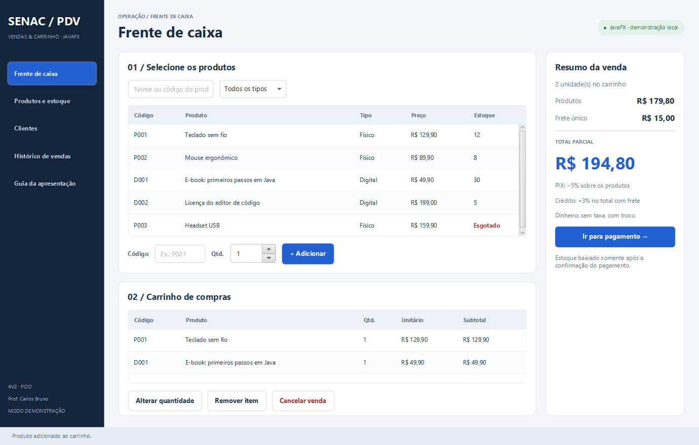
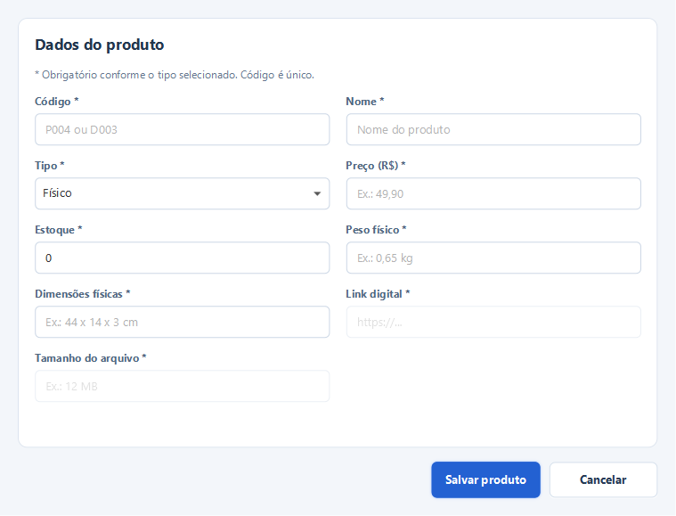
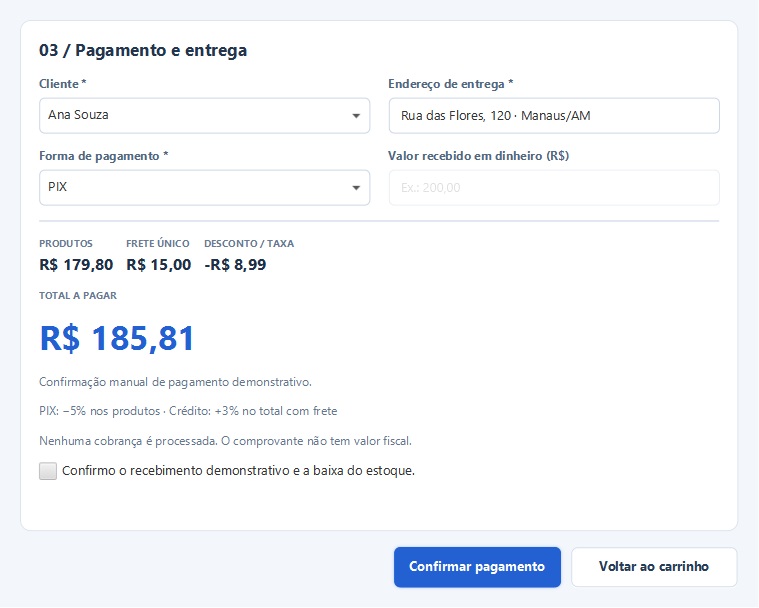

Esta é a entrega JavaFX. Use esta pasta no lugar da versão Swing anterior. Não houve publicação no GitHub.
Como abrir
- Extraia o ZIP inteiro.
- Tenha JDK 21 ou superior instalado. O JDK não acompanha o pacote.
- Abra iniciar.bat. Preserve as pastas e arquivos ao lado dele.
O ZIP inclui o executável e as bibliotecas JavaFX 21.0.6 para Windows x64. Não precisa de Maven, banco ou internet para abrir esse pacote. Evite executar o JAR por duplo clique, pois é preciso informar os módulos JavaFX. Ao clonar do GitHub, o primeiro preparo baixa os módulos ignorados pelo Git e compila o código.
Para recompilar, abra PowerShell nesta pasta: powershell -NoProfile -ExecutionPolicy Bypass -File .\compilar.ps1. Para testes, acrescente -Testar. A alternativa Maven está descrita no README técnico.

Interface real JavaFX: TableView, busca, filtro de tipo, carrinho e total.
O que está pronto
Cadastro e edição de produtos físicos/digitais e clientes; consulta de estoque; busca e filtro; inclusão por código e quantidade; alteração, remoção e cancelamento do carrinho; pagamento PIX, dinheiro e cartão; frete, taxas, desconto e troco; comprovante com salvar TXT e impressão; histórico e roteiro de apresentação.

Produtos físicos e digitais com campos habilitados por tipo.
Checkout com confirmação de recebimento e totais atualizados.Ensaio para a apresentação
- Explique como o PDV ajuda no controle de vendas e estoque. Mostre os cadastros.
- Adicione P001 e D001 ao carrinho. Altere a quantidade e remova um item.
- Tente P003 (esgotado) e 13 unidades de P001. Mostre os avisos de estoque.
- Abra pagamento: PIX R$ 185,81, dinheiro R$ 194,80, crédito R$ 200,64. Em dinheiro, digite 200 e mostre R$ 5,20 de troco.
- Volte ao carrinho sem baixar estoque; depois confirme por PIX, marcando a confirmação de recebimento.
- Mostre o comprovante, o histórico e o estoque reduzido. Faça venda somente digital: sem frete e sem endereço obrigatório.
- Explique o que você entregou: telas JavaFX e contrato para a equipe integrar o backend.
Integração com o projeto da equipe
Copie somente a pasta telas-av2-javafx para a raiz do repositório. É um módulo independente com seu próprio pom e scripts; não substitui Main, pom ou views existentes. Usa a mesma versão JavaFX 21.0.6 declarada no projeto consultado.
PdvApplication inicia o JavaFX; PdvView reúne telas e formulários; PdvGateway define o contrato de integração; DemoGateway simula as operações em memória. O CSS fica em src/main/resources/pdv-av2.css. A integração com os controllers reais está explicada no README.
Limites: os dados são fictícios e reiniciam ao fechar. Não há banco, autenticação, cobrança real ou emissão fiscal. O módulo visual não substitui a herança de produtos e as estratégias de pagamento exigidas no domínio final da equipe.
Publicar no GitHub por você
- No GitHub Desktop, clone ou atualize o repositório da equipe.
- Crie a branch
codex/telas-av2-javafx. - Copie esta pasta telas-av2-javafx para a raiz do clone. Não envie a versão Swing antiga.
- Confira Changes e faça commit: Adiciona telas do PDV em JavaFX para AV2.
- Publish branch / Push origin → Create Pull Request. Informe que o módulo é demonstrativo e ainda não se conecta ao backend.
- Peça revisão do gerente antes do merge. Se não tiver permissão, use um fork na sua conta.
Verificado
Compilação para Java 21, 25 verificações da demonstração e 30 verificações pelos controles JavaFX aprovadas. Foram geradas e revisadas 15 capturas. Execução validada em JDK 26, Windows x64; a compilação usa alvo Java 21. Impressora física, seletor de arquivo, Maven e backend real não foram exercitados.
Frete adotado: R$ 15 por entrega física; PIX −5% nos produtos; crédito +3% em produtos e frete. A equipe deve alinhar essas interpretações com o professor.
Documentação completa e integração · Comprovante · Histórico · Documentação oficial JavaFX